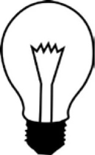

AMPULÜ HANGİ DÜĞME AÇIYOR?
İki katlı bir evde alt katta üç elektrik düğmesi, üst katta ise tavana asılmış bir ampul vardı. Ancak hangi elektrik düğmesinin ampule bağlı olduğu bilinmiyordu. Yalnızca bir kez yukarı kata çıkarak, ampulü hangi düğmenin açacağını bulabilir misiniz?
Cevap:
İlk düğmeyi beş dakika boyunca açık bıraktıktan sonra, ikinci düğmeyi açıp yukarıya çıkınız. Eğer ampul yanıyorsa, doğru düğmeyi buldunuz demektir. Eğer yanmıyorsa, elinizle ampule dokunun, sıcak ise onu ilk düğme çalıştırmış anlamına gelir, ancak soğuk ise üçüncü düğme ampule bağlı demektir.
